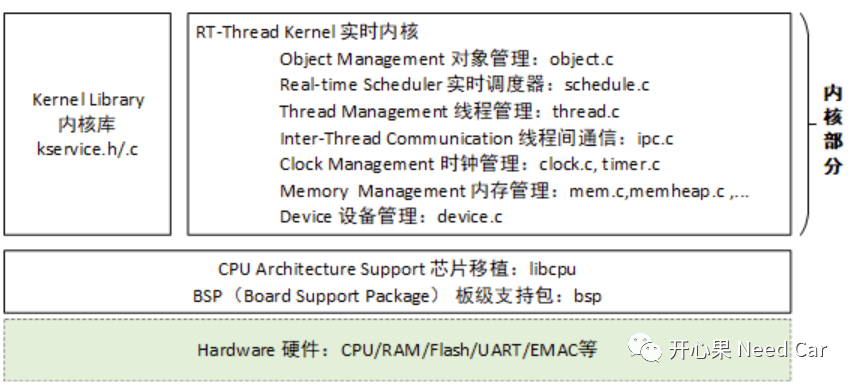
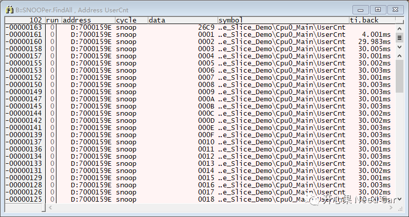
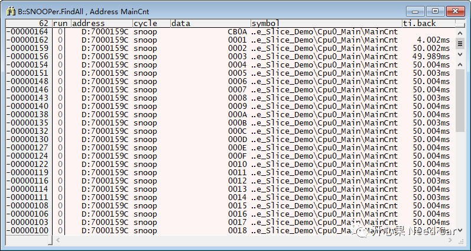

开心果 Need Car · 2023-06-09T19:37:00+08:00 · 微信原文
嵌入式开发，如果不懂操作系统（OS：Operating System），工程中的很多问题将会被掣肘而不解其意。对于操作系统的学习，知道某个架构的API如何用只能算粗浅的认识OS。如果要真正的认识OS，需要了解操作系统的内核。本文，聊一聊内核移植中的CPU架构移植。之所以选择RT-Thread，是因为看到了"国产"字样。所需软硬件参考资料如下：
1、RT-Thread内核
RT-Thread或者说操作系统的核心就是内核。RT-Thread的内核示意如下：

学习内核，主要学习线程、线程间通信、中断、内存、定时器等概念。
Tricore系列，其他芯片型号的移植仓库链接如下：
https://gitee.com/seekfree/TC364_RTThread_Library
https://gitee.com/seekfree/TC264_RTThread_Library
如上的仓库，libcpu文件夹中没有cpuport.c源码，只有对应的cpuport.o文件。如果想进一步了解Tricore的上下文的切换机制，可以参考如下链接：
https://github.com/balanceTWK/bsp_tricore
2、创建线程
本文创建三个线程，两个系统线程（即：主线程和空闲线程），主线程优先级10，时间片：20ms，延时30ms（周期）；一个用户线程（优先级10，时间片：10ms，延时50ms（周期））。
void thread_10ms_entry (void *parameter);int time_10ms_thread_example (void);INIT_APP_EXPORT(time_10ms_thread_example);static rt_uint8_t thread10ms_stack[512];static struct rt_thread thread10ms_thread;static rt_uint16_t MainCnt,UserCnt;int time_10ms_thread_example(){rt_err_t result;result = rt_thread_init(&thread10ms_thread, "led", thread_10ms_entry, RT_NULL,&thread10ms_stack[0], sizeof(thread10ms_stack), RT_MAIN_THREAD_PRIORITY, 0);if(result == RT_EOK)rt_thread_startup(&thread10ms_thread);}void thread_10ms_entry(void *parameter){while(1){UserCnt++;rt_thread_mdelay(50);}}int main(void){IfxCpu_emitEvent(&g_cpuSyncEvent);IfxCpu_waitEvent(&g_cpuSyncEvent, 0xFFFF);while(1){MainCnt++;rt_thread_mdelay(50);}}

主线程（main()）按照预期的50ms周期调度，如下所示：

往期精彩回顾
Bootloader开发：为什么需要SBL（Secondary Bootloader）?
Autosar EcuM：APP由RUN到POST_RUN浅析